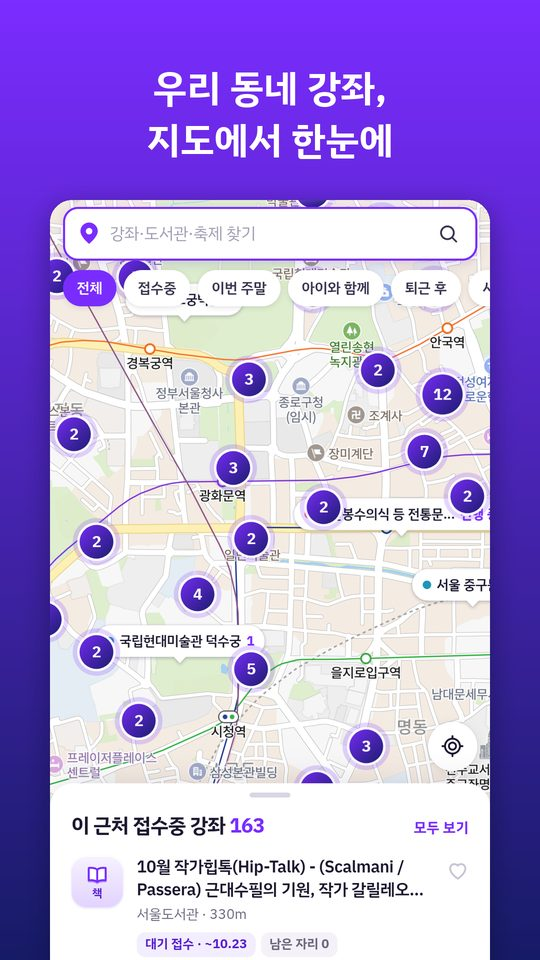
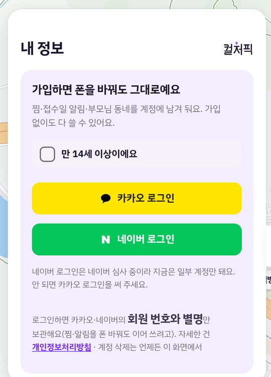
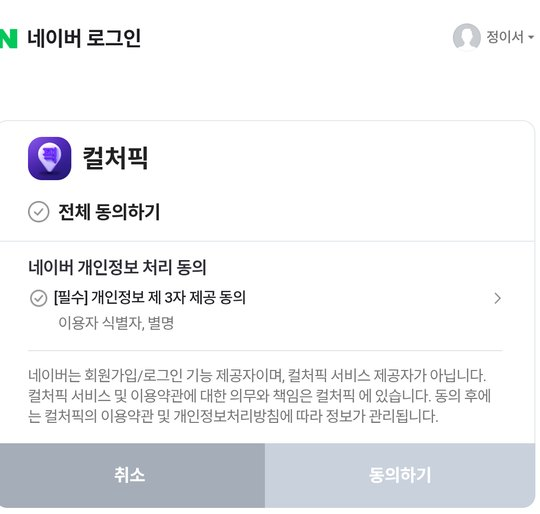

지도에서 찾기
지금 있는 곳 주변의 강좌 여는 곳이 말풍선으로 보여요. 숫자는 지금 신청할 수 있는 강좌 수예요. 위쪽 칸으로 접수중·문화센터·전시·도서관·축제를 골라 볼 수 있어요.
주민센터·평생학습관·체육센터·도서관, 백화점과 마트 문화센터가 공개한 강좌, 그리고 전국 축제를 매일 모아 지도에 보여 드려요. 마음에 드는 강좌는 찜해 두고, 접수 날짜가 오면 알림을 받아요.
2026년 10월 기준 숫자예요. 안드로이드 앱은 구글 플레이 비공개 시험을 준비하고 있고, 아이폰 앱도 함께 만들고 있어요.

흩어져 있는 공공·민간 강좌 정보를 한곳에서 찾게 해 주는 정보 안내 앱이에요. 신청과 결제는 컬처픽이 하지 않고, 각 기관 누리집으로 연결해 드려요.
| 서비스 종류 | 강좌·문화행사 정보 검색과 지도 안내(무료) |
|---|---|
| 보여 주는 정보 | 기관이 누구나 볼 수 있게 공개한 강좌 목록(강좌 이름·대상·요일·시간·수강료·접수 기간·남은 자리), 한국관광공사 축제 정보 |
| 신청·결제 | 하지 않아요. [신청하러 가기]를 누르면 그 기관 누리집이 열려요 |
| 회원 가입 | 없어도 모든 기능을 쓸 수 있어요. 로그인은 찜·알림을 폰을 바꿔도 이어 쓰고 싶을 때만 골라서 해요 |
| 돈 버는 방법 | 앱 화면 아래 배너 광고(구글 애드몹). 유료 결제·사행성 기능은 없어요 |
로그인은 골라서 하는 기능이에요. 로그인하지 않아도 지도·검색·찜·알림을 모두 쓸 수 있어요.
| 로그인 방법 | 카카오 로그인, 네이버 로그인(내 정보 메뉴) |
|---|---|
| 로그인하는 이유 | 찜·접수일 알림·부모님 동네를 계정에 저장해서, 폰을 바꾸거나 앱을 다시 깔아도 이어 쓰기 위해서예요 |
| 네이버에서 받는 정보 | 회원 식별 번호와 별명만 받아요. 이름·전화번호·이메일·생년월일은 받지 않아요 |
| 정보를 쓰는 곳 | 회원 구분(식별 번호)과 내 정보 화면의 인사말(별명)에만 써요. 광고·마케팅에 쓰지 않아요 |
| 가입 나이 | 만 14세 이상만 가입할 수 있어요(로그인 단추 위 확인 칸) |
| 탈퇴 | 내 정보 › 계정 삭제를 누르면 계정과 찜이 바로 지워지고, 네이버·카카오 연결도 함께 끊어요 |
| 위치 | 지도 가운데를 정하는 데만 폰 안에서 쓰고, 서버로 보내지 않아요 |


기관별 자료 출처 전체 목록은 자료 출처 페이지에서 볼 수 있어요. 정보가 틀렸거나 빼 달라는 요청은 아래 메일로 보내 주세요.
| 운영 | 컬처픽 (개인 개발) |
|---|---|
| 메일 | ys_jung86@naver.com |